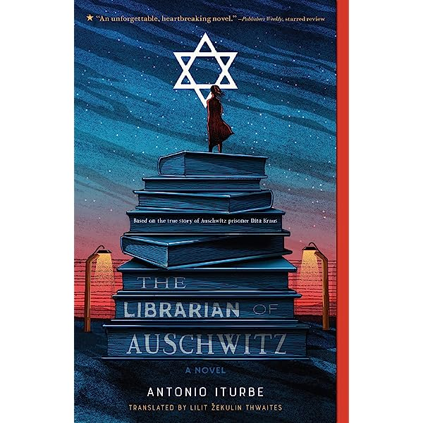

This historical fiction novel is based on the true story of Dita Kraus, who was 13 years old when she was sent to a camp of the Auschwtiz-Birknenau extermination camp in Poland during the Nazi invasion. This book shows how Dita Kraus found hope and courage in a cruel, unjust world and rose against her oppressors.

This mind-changing novel follows the life of one of nine children on a paradise island where everything is perfect. Everything remains the same on the island, except one thing - every Changing, a boat comes, bringing them another child to join them on the island, and taking away the oldest member. Soon, it will be Jinny's turn to leave in the Changing - yet is she ready for it? The book follows Jinny's life as the Elder on the island as she grapples with the anxiety of leaving and the frustration of not knowing where she came from.

This lovely novel takes place during the Chernobyl disaster. Two girls from different backgrounds start off as rivals - hating one another and trying to top each other at every opportunity. This story is a true tale of strength resillience, and change.

This novel is about a girl called Pluto who was diagnosed with depression. Due to her depression, she has lost a lot of her friends and missed a lot of school. Her life is very different than what it used to be. Her father wants her to go live with him, in a different county - but she wants to stay with her mother. =In this book, Pluto tries to become "Old" Pluto again, but soon comes to realize that there is no "Old" Pluto or "New" Pluto - there is just her.

This classic is based on a pilot's hallucinations when crash landing his plane into the Sahara desert. He tells the story of a young boy who is from an asteroid called B-612. A truly amazing novel.

This thought-provoking novel tells 10 different stories through 10 different characters. Each character has a different story to tell, and different challenges they are going through.This book teaches to always look at both sides of the story and that nothing is as it seems.

Nobody Owens is a boy who is raised by ghosts in a cemetery. While normal boys would learn math, science, and history, Nobody Owens learns how to become invisible, haunt other people's dreams, and defeat those who want nothing but to kill him.

This lovely poem by Emily Dickinson is a must-read. This lovely poem explains how her fame lives on and on, for centuries.

Another amazing poem by Emily Dickinson. This poem is about how hope can change one's situation completely, and make even the darkest of days bright.

This short novel is about how no matter what, sisters will always be there for you. This lovely story explores magic, sister-hood, imagination, and much more. This book will bring you into another world.